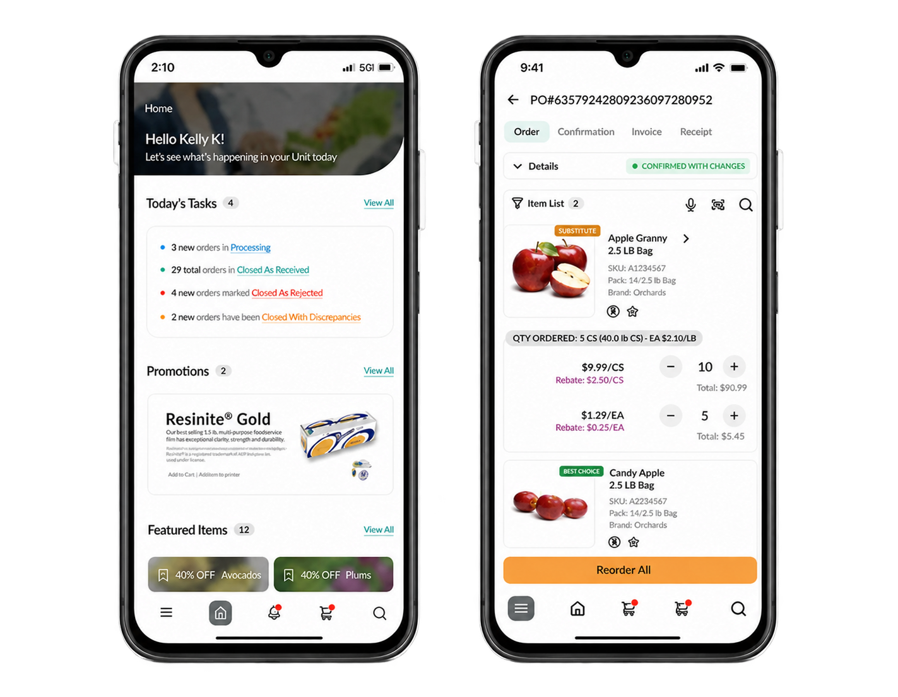
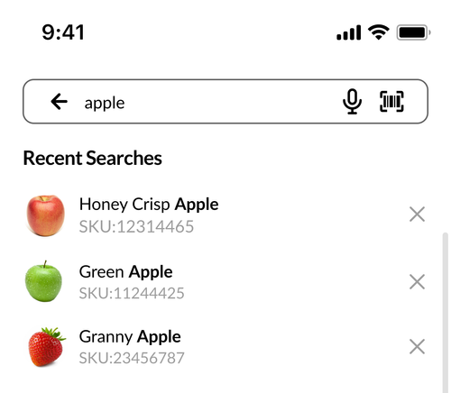
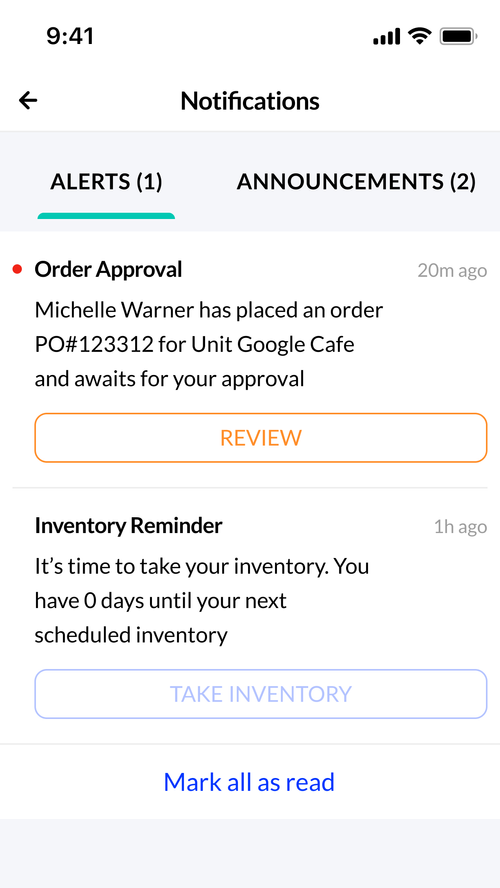
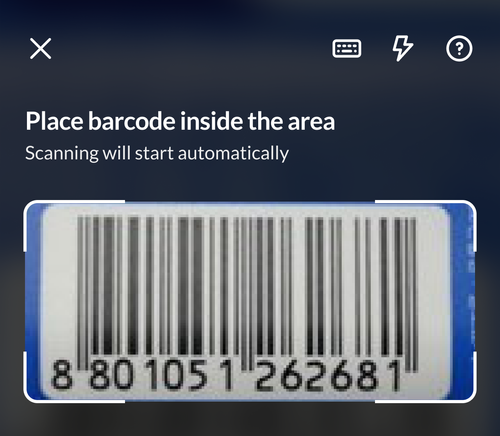
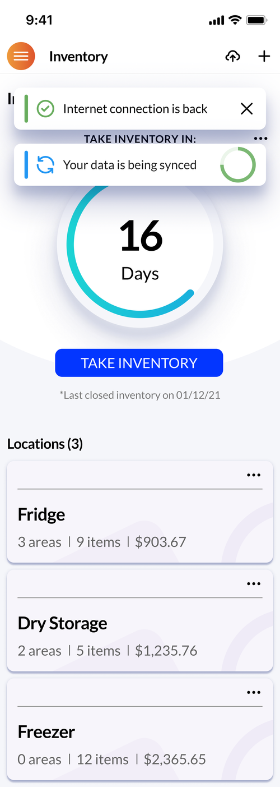
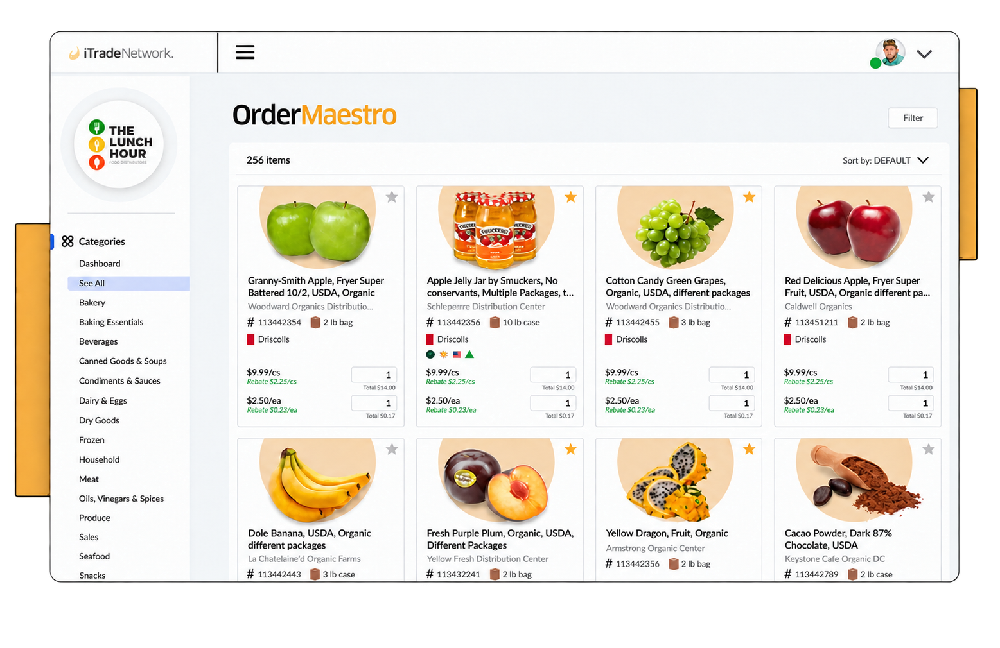
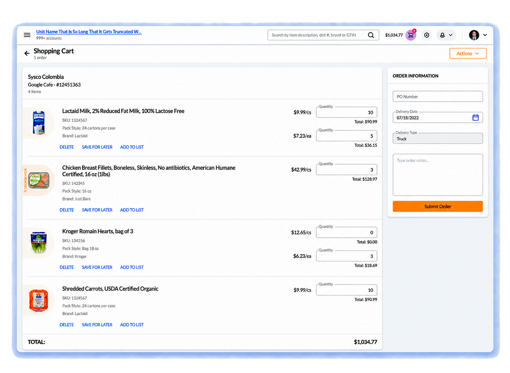
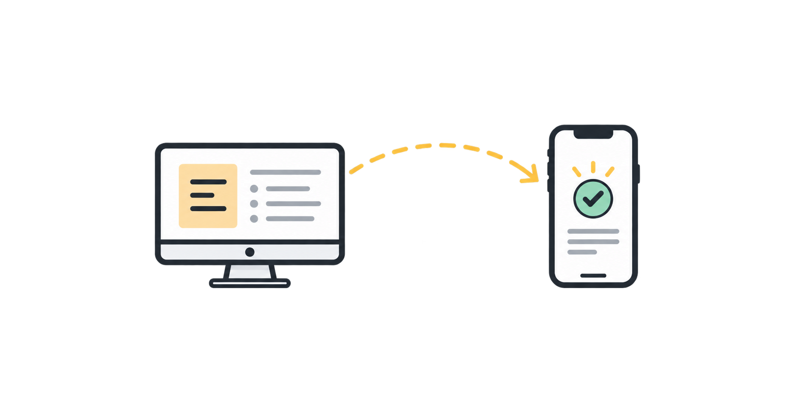

Product & business impact
75%higher task completion
More users completed the evaluated workflows in the redesigned experience.
80%less time on task
The mobile-first workflows substantially reduced the effort required for everyday work.
25%revenue growth
Reported six months after launch during my tenure at iTradeNetwork.
40%customer acquisition
The modernized platform supported stronger market traction.
01
A Critical Platform With Growth at a Standstill
OrderMaestro was iTradeNetwork’s second-largest product, supporting approximately 50,000 users and three of the five largest foodservice operators. But an outdated, desktop-only experience limited adoption, weakened the sales story, and made daily work harder for people who rarely stayed at a desk.
At a glance
in three years
losing a major client
Essential work was trapped in a desktop workflow.
Sales reps, warehouse teams, and operators needed to manage orders, resolve issues, and update inventory while moving through facilities. But key details were spread across disconnected screens, routine actions took too many steps, and everyday work often required a return to a workstation.
Why it stalled
Work stopped at the desk
People spent roughly 75% of their day moving through facilities, but lost order visibility the moment they stepped away from a workstation.
Mobile existed, but didn’t stick
An earlier mobile offering was available, but customers did not adopt it—showing that access alone was not enough.
Lost service meant lost progress
Inventory quantities could not be saved without a connection, disrupting the workflow teams relied on most in the field.
Finding the right product took too long
Exact-match search and buried order changes slowed product discovery and made important exceptions easy to miss.
02
Defining the Goal
Free core workflows from the desk while keeping the depth, trust, and dependability people rely on in enterprise tools.
Untethered from the desk
Place orders, approve requests, and manage inventory from wherever the work happens.
Less friction, faster results
Cut the steps it takes to locate products and get daily tasks done.
Built to grow the business
Deliver a modern, connected experience that keeps existing customers loyal and attracts new ones.
03
Starting From How People Actually Work
I owned design from early discovery all the way into implementation. Through stakeholder interviews, customer feedback, journey and empathy mapping, personas, and a competitive review, it became clear the real opportunity went well beyond fitting a desktop product onto a smaller screen.
Study the context
I linked people’s daily routines and physical surroundings to the operational and business problems driving each request.
Design for critical moments
I aimed early concepts at the decisions, exceptions, and inventory tasks that mattered most once users stepped away from a desk.
Stay aligned to launch
I worked with product and engineering through technical constraints, validated designs with customers, and stayed involved through QA.
04
What We Uncovered
Going mobile meant designing for a new context, not just a narrower screen. Three findings refocused the redesign on mobility, exceptions, and resilience, while the toughest constraints turned into the principles behind every decision.
Work happened on the move
People needed quick access while meeting customers, moving through the warehouse, or receiving deliveries.
Exceptions drove the work
Teams didn’t need every desktop feature—they needed to know right away when something went wrong.
Signal was never guaranteed
Inventory tasks had to keep going in warehouses and back rooms where service came and went.
Design constraints
Our toughest constraints shaped how we designed.
Evolve without losing people
Update a well-known enterprise workflow without making longtime users start over from scratch.
Plan for spotty connections
Handle connectivity as a normal state of the system and protect work when the signal drops.
Consistent across every device
Keep iOS, Android, tablet, and desktop feeling unified while honoring each platform’s native patterns.
05
Rebuilding Around Mobile Work
Rather than a single linear flow or a responsive facelift, I reorganized the product around the jobs people had to get done away from a desk: locating orders, checking status, handling exceptions, and keeping inventory up to date.
Surface what matters—no digging required.
Order cards made customer, value, and status easy to scan in seconds, and filters mirrored real operational states so a notification led straight to the right next step.
Research signal
Once teams stepped away from their desks, they lost sight of orders and critical exceptions slipped through.
Design response
An order view built around tasks put priority details and next steps front and center.
Key features
Clear status hierarchy · Task-based filtering · High-value information first

Mobile order visibility
Urgent tasks, order status, and product details remain in view no matter where users are working.
Inventory that keeps going offline.
Instead of treating a dropped connection as a failure, I designed counts to be stored on the device and synced automatically once service was restored.
Research signal
Without service, teams couldn’t save inventory counts, which broke a workflow they relied on every day.
Design response
Counts are kept on the device and synced automatically as soon as the connection comes back.
Key features
Offline counts · Automatic synchronization · Resilient tablet workflow


Four features aimed at the biggest pain points.
On top of the core flows, I concentrated on the points where finding products, tracking changes, and linking to physical work used to fall apart.
Research signal
Search that required exact matches and order updates hidden deep in the product made items hard to find and exceptions easy to overlook.
Design response
Search, notifications, barcode scanning, and offline sync put the right action in front of users exactly when they needed it.
Key features
Elastic search · Actionable notifications · Barcode scanning · Offline sync




A single system for every place work happens.
The redesign combined streamlined mobile interactions with refreshed desktop workflows for browsing the catalog and handling more involved purchases.
Research signal
Teams wanted their work to go wherever they went, while still having the depth that complex purchasing demands.
Design response
Lightweight mobile interactions were complemented by updated desktop workflows for tasks better suited to a workstation.
Key features
Product discovery · Order review · Shared information across devices


06
Mobility That Moved The Numbers
By matching OrderMaestro to the actual rhythm of foodservice operations, the redesign let users get critical work done faster and helped drive wider product growth.
Product and business results reported for the OrderMaestro redesign while I was at iTradeNetwork.
Work stayed at the desk.
- Step off the floor to get tasks done
- Need precise product details to find anything
- Lose work whenever the connection cut out
- Lose track of orders when away from a screen

AfterWork went wherever users did.
- Handle key tasks right from the floor
- Locate products fast and with confidence
- Keep working as the connection comes and goes
- Stay up to date from anywhere
75%higher task completion
80%less time on task
25%revenue growth
40%customer acquisition
07
Key Takeaway
The pivotal lesson
When the way people work changes, responsive layouts alone won’t cut it.
The most important call was choosing not to shrink the desktop product down. Instead, I pinpointed where being mobile changed what users actually needed and designed around those moments, while keeping the depth and reliability enterprise users expect.